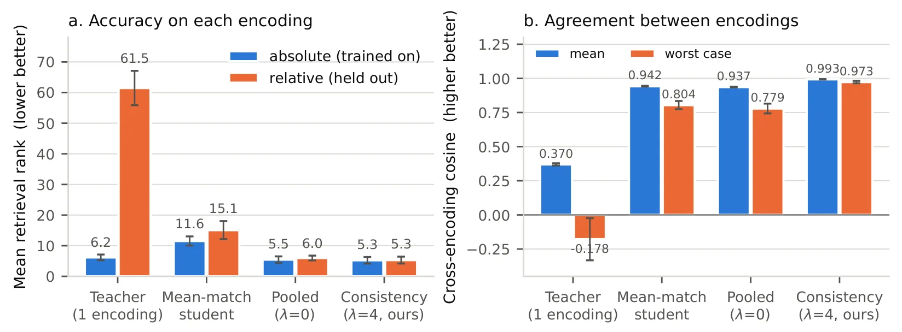
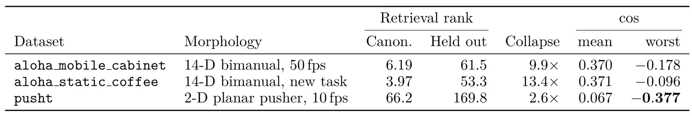
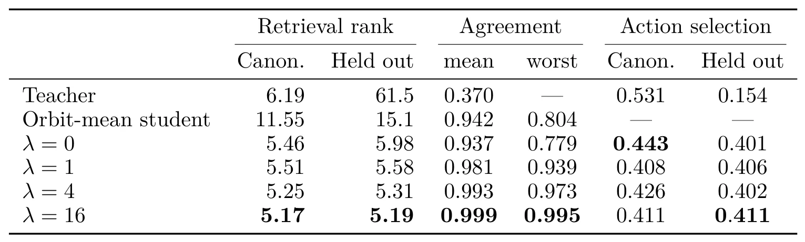
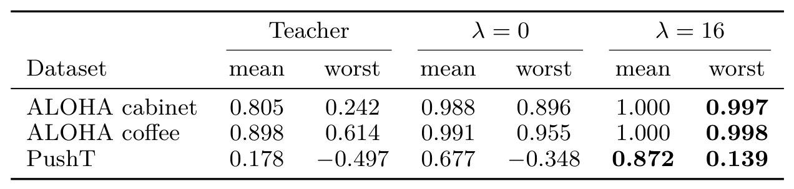

Robot World Models 不具备动作写法不变性
Robot World Models Are Not Invariant to How the Actions Are Written
三套机器人数据集、两种形态上 retrieval 退化 2.6–13.4×，goal-conditioned action selection 从 53% 降至 15%；objective averaging 可恢复任务性能但 tail 仍需 disagreement penalty。
作者、单位与技术谱系 · Research context
作者与单位
研究脉络
- action-conditioned world models方法上游关系：论文把动作条件预测器的输入表示不变性作为独立可靠性问题。[arXiv 官方 HTML v1]
- orbit-constancy / invariance tests方法基座关系：本文用可重构性与预测一致性区分真正重参数化和模型未学到的不变性。[arXiv 官方 HTML v1]
合作网络
- Robot World ModelsHassana Labs / Oxford / UCL → 作者团队关系：共同署名/单位[arXiv 官方 HTML v1]
- absolute vs relative actions三套 robot datasets / 两种形态 → 论文实验关系：公开实验依赖[arXiv 官方 HTML v1]
作者和单位是原文事实；技术脉络是基于公开原文/项目关系的解读；未据此推断导师或师生关系。
方法本质拆解 · What actually changed
训练/参数
原文显示该方法基于现有模型或策略进行训练/评估，具体参数冻结与训练预算以原文为准。该条只记录已核验的系统层事实，不把推测写成配置。
约束与条件
方法把几何、时间、语义或动作表示作为额外条件。约束作用位置和是否硬约束以论文公式与实验协议为准。
推理流程
推理包含结构化表示、滚动执行或激活/策略处理。它不是凭标题推断的传统后端优化。
方法本质
核心是把空间证据接入决策变量，使模型在输入变化或长时程执行中保留可验证的几何/语义状态。
输入观测与结构化先验 + 作用于表示/动作的约束或聚合 + 闭环执行/干预 → 提升空间决策可靠性。

桥接价值Bridge
桥接价值
这篇论文把可靠状态/世界模型的分布偏移从视觉输入扩展到 action channel。它提醒导航和操作系统必须把控制接口写法视为模型状态的一部分，而不是无损的字符串重编码。
方法与模块Method
方法摘要
比较绝对关节目标和相对增量两种 action encoding，检查 predictive parity 与 reconstructibility。修复策略是在目标函数层面对两种编码做 averaging，并用 disagreement penalty 收紧最坏情况。
可迁移模块
可迁移的是 joint-input invariance test、轨迹级 worst-case agreement 和 action-orbit augmentation。它可以用于 VIO/SLAM 的控制先验、传感器坐标变换和机器人策略接口审计。

证据Evidence
关键证据与数字
跨三套 robot datasets、两种 morphologies，retrieval 退化 2.6–13.4×；goal-conditioned action selection 从 53% 降到 15%；PushT 上 beliefs cosine 为 0.067，最坏为 -0.377。disagreement penalty 后报告 worst-case agreement 0.995，具体实验表待核验。
边界与下一步Limits & Next Step
边界与风险
枚举两种编码只适合小型离散 orbit，连续或组合动作变换会带来计算爆炸。objective averaging 对方向值输出没有 Jensen 保证，归一化均值可能低于每个成员。
下一步实验
在 SLAM/VIO 的速度、body-frame/world-frame 和时间延迟表示上构造等价编码，先测 predictive parity 再测闭环漂移。将目标平均、输出平均和 disagreement penalty 分开比较，并按最坏序列报告 ATE、控制失败率和校准。
{kind=link}

{kind=link}

{kind=link}
